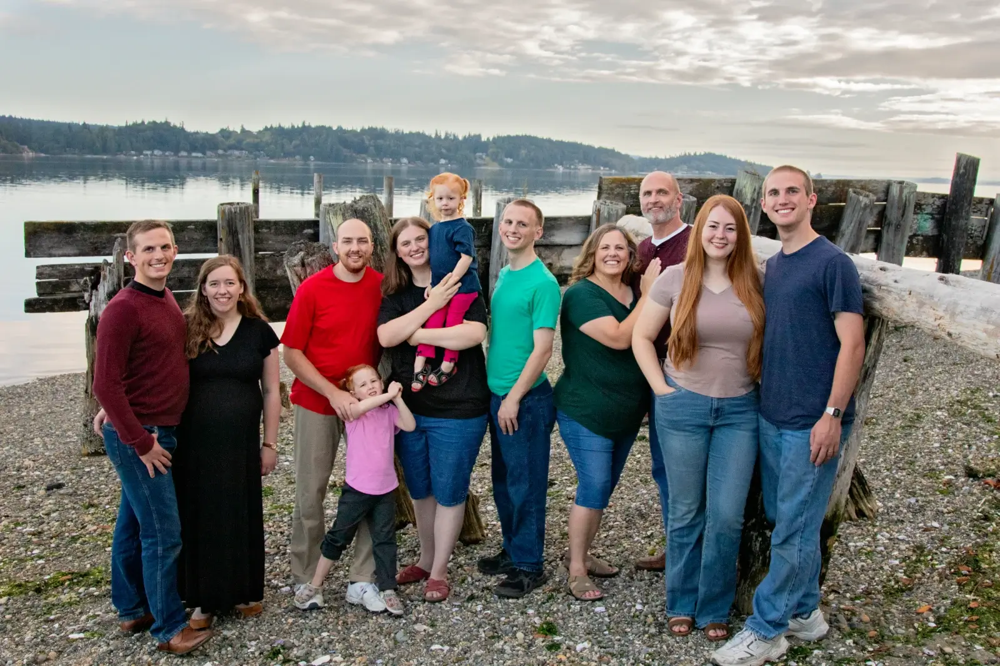

About Me
Where have you been?
I come from Port Orchard Washington which is where I've lived the majority of my life. I then went served as a proselyting missionary for the Church of Jesus Christ of Latter-day Saints for two years during which I served in Sanders AZ, Indian Wells AZ, Toadlena NM, and Lupton AZ. Afterwards, I've been attending school at Brigham Young University - Idaho in Rexburg ID.
How has your family influenced who you are today?
I am very close to my family despite us currently living in different states from one another. As the youngest of four, I've had the unique perspective of being able to learn from their example and receive a plethora of helpful advice for the future. My sister and two brothers are all married and I've been able to learn from my in-laws as well. My family has played a major role in defining who I am today and my loving parents have taught my valuable life lessons that has enabled me to flourish and grow.
What are your hobbies and interests?
I love working with computers and software, whether that be programming, image editing software, or spreadsheet applications. I enjoy playing a myriad of board games and video games, as well as designing my own. I also am passionate about creative writing and developing my own unique ideas and settings.
What is your educational background?
Growing up, I attended Burley Glenwood Elementary and Cedar Heights Middle School. In my freshman and sophmore year of high school I attended Washington Virtual Academies before enrolling the Running Start Program in Olympic College where I earned my high school diploma and Associated of Arts. After serving a 2 year mission I've been attending Brigham Young University - Idaho as a Computer Science major.